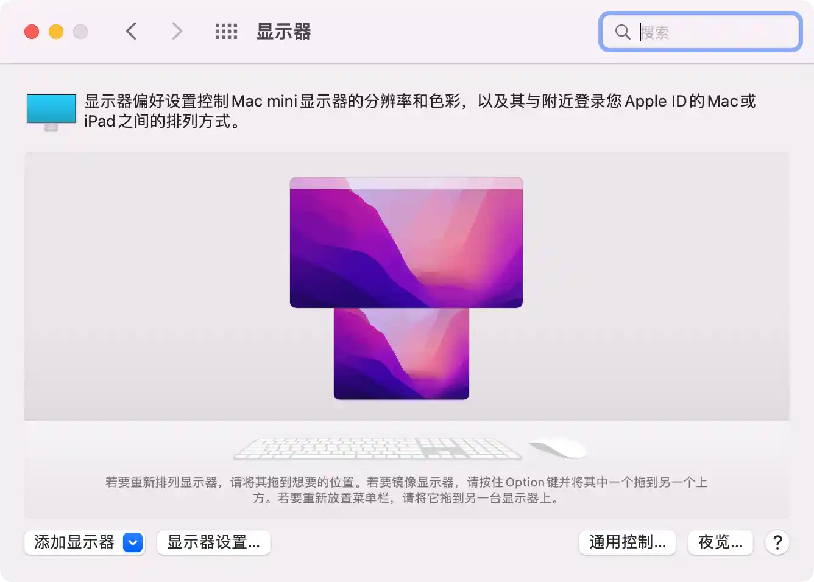
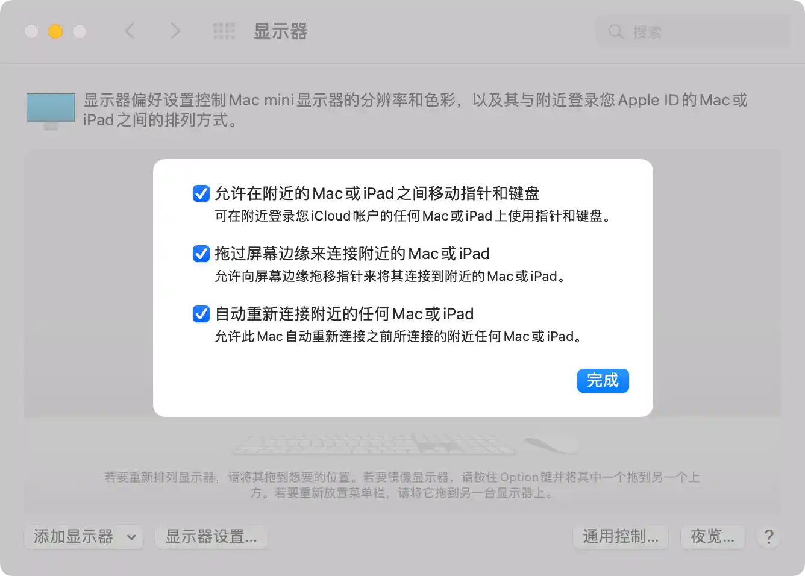
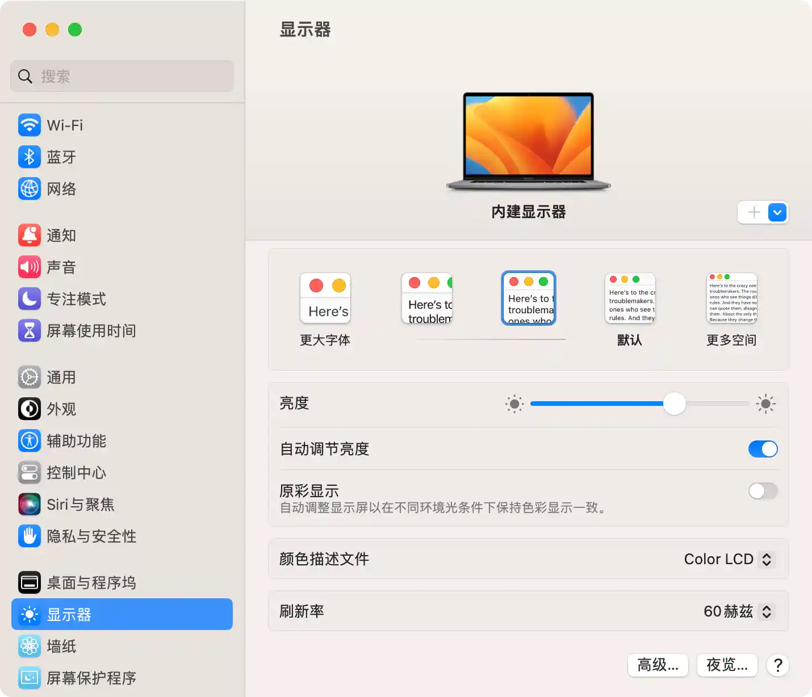
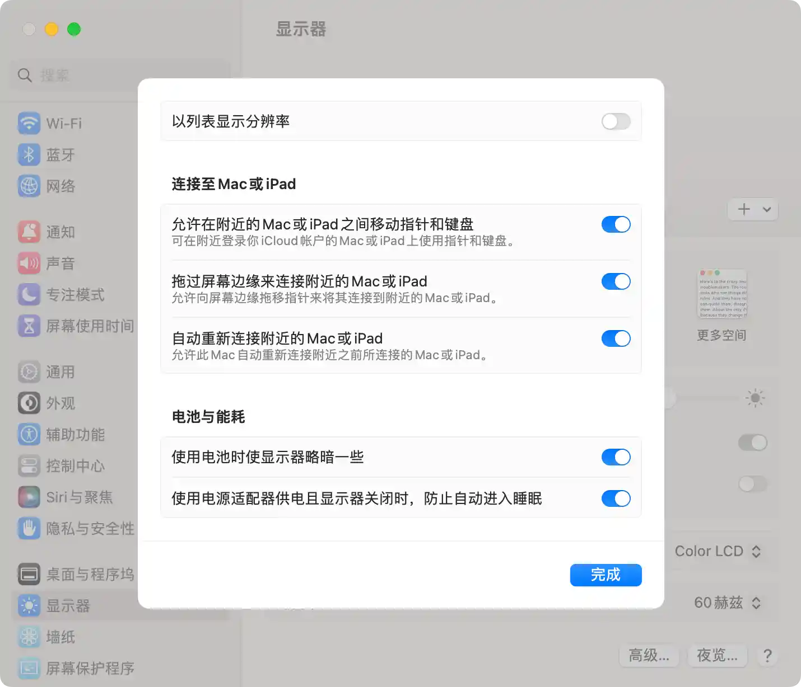
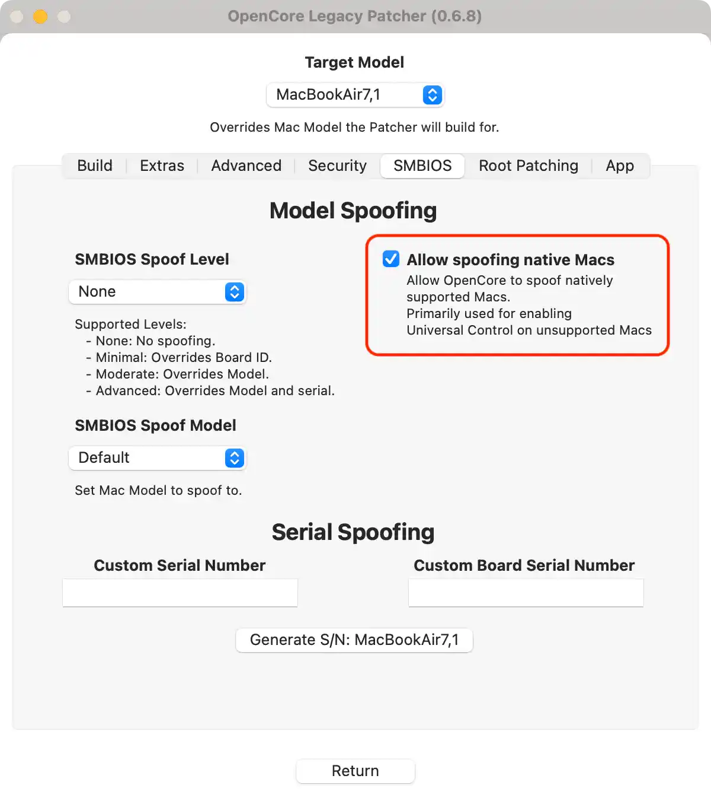
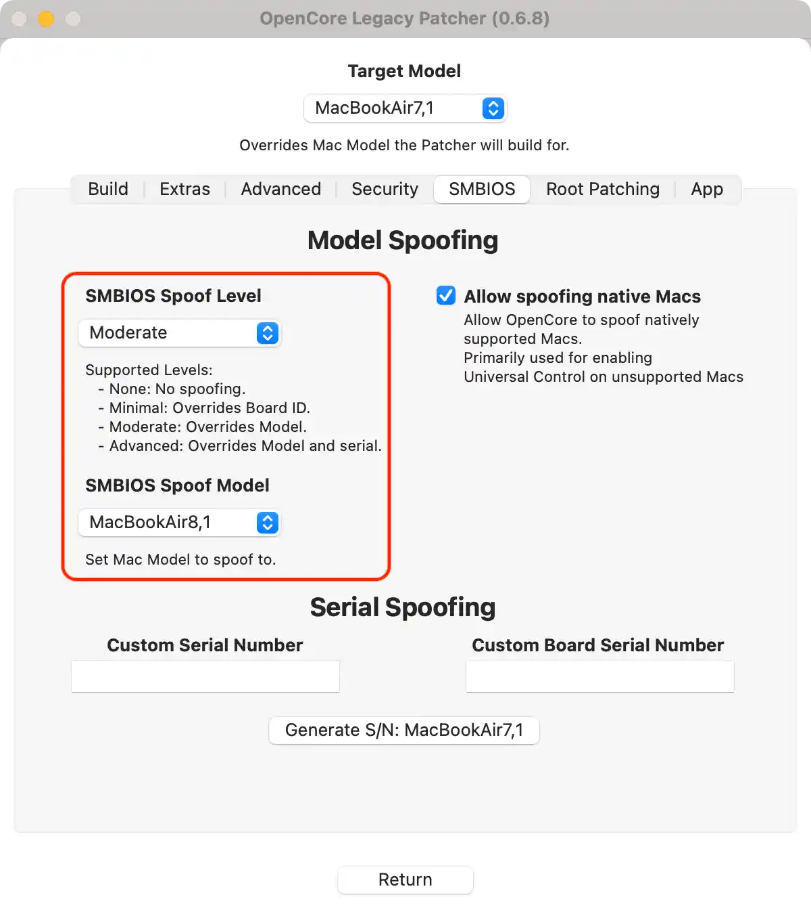
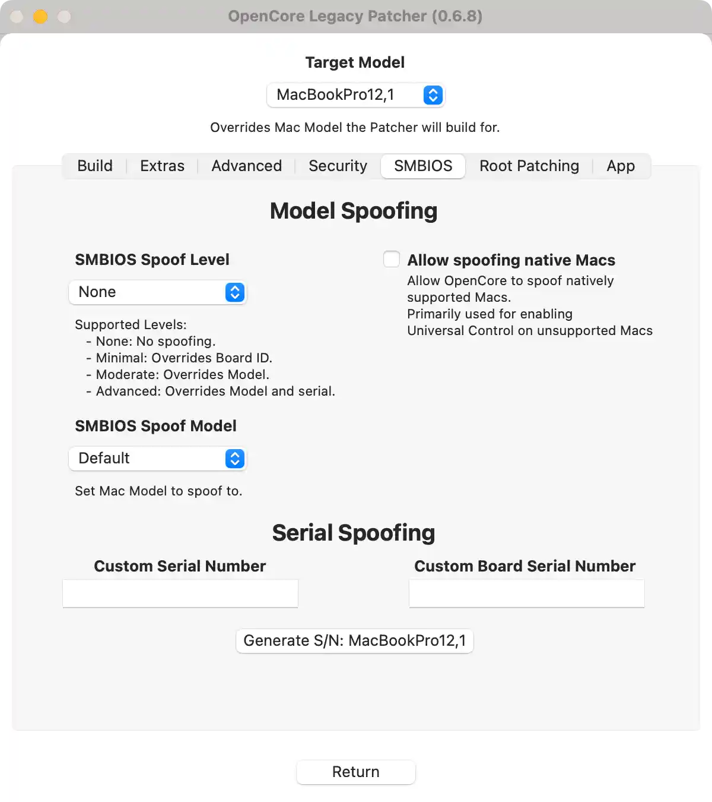
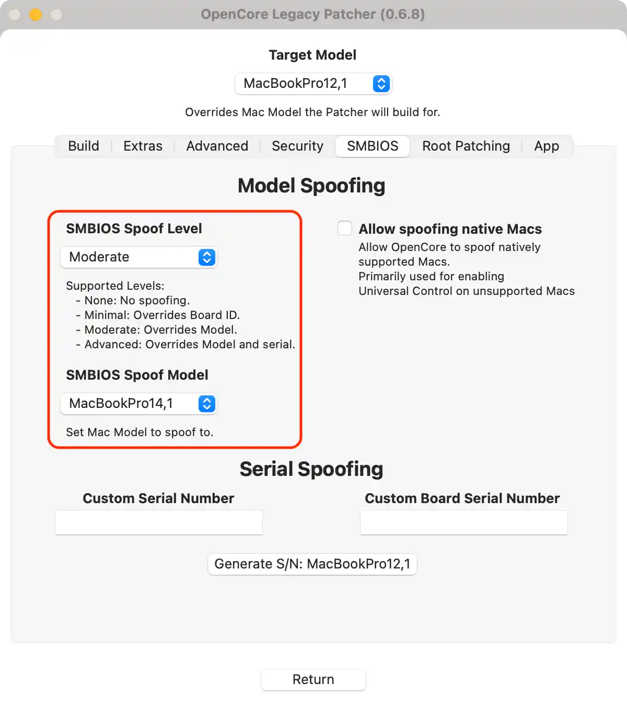
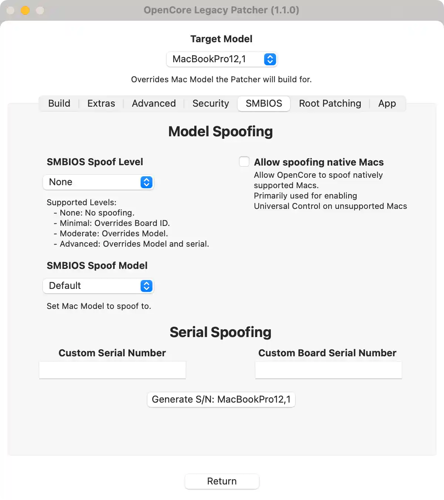
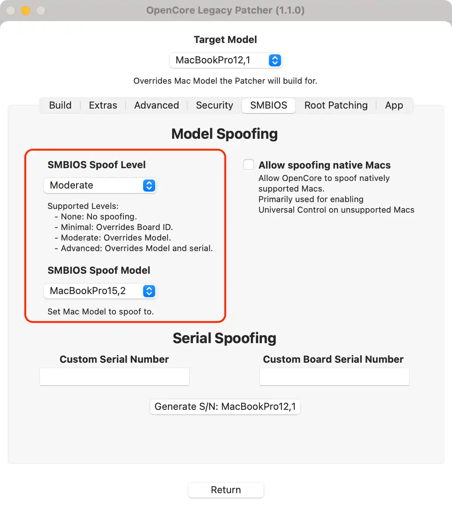

请访问原文链接：不受支持的 Mac 上的通用控制 查看最新版。原创作品，转载请保留出处。
生活本不易，原创更不易。还请友商高抬贵手，尊重彼此的劳动成果。谢谢🙏
作者主页：sysin.org
2024-11-13 更新：现已支持 macOS Sequoia。
2023-10-24 更新：现已支持 macOS Sonoma。
2023-08-25 更新：修改为 OLP 0.6.8 版本的截图和用词（原图丢失），感谢热心读者朋友的反馈。
2023-01-07，现已更新支持 Ventura。
本文为 在不受支持的 Mac 上安装 macOS (索引页面) 的补充章节。
如果说 macOS 10 系列升级到 macOS Big Sur 的首要理由是卓越的现代用户界面，那么 Big Sur 升级到 Monterey 的首要理由就是 “通用控制”。Ventura 及更新版本继续保持该卓越特性并向下兼容。
通用控制：使用同一键盘和鼠标操控 Mac 和 iPad
使用 Mac 的键盘、鼠标或触控板可控制附近的最多两台其他 Mac 或 iPad 设备，并在它们之间无缝操控。

使用“通用控制”时，每台设备都会显示自己的屏幕和 App，但你只需使用一个键盘、鼠标或触控板，即可在设备之间移动指针，向不同设备中键入内容，甚至在设备之间拷贝内容。
如果你希望通过 iPad 来扩展或镜像 Mac 桌面，请使用“随航”功能。
通用控制是什么
2022 年 3 月 15 日凌晨推送的 macOS Monterey 12.3 是一个重大更新，它引入了 Universal Control（通用控制），这是 Apple 首先在 WWDC 上公布的一项功能，然后推迟了几个月。Universal Control 旨在让您使用单个鼠标、触控板和键盘控制多台 Mac 和 iPad（运行 iPadOS 15.4 及以上版本的 iPad），并且通过拖放方式在不同设备之间传输文件 (sysin)。
将您的设备更新到 macOS 12.3 和 iPadOS 15.4 后，Universal Control 会自动启用（设置选项：系统偏好设置 > 显示器，“通用控制…” 按钮），允许您的 Mac 的光标和键盘在 iPad 上工作，反之亦然。使用起来简单直观（除了 Mac+iPad，Mac+Mac 也可以。至少有一台 Mac，可以同时控制多台 Mac 和 iPad）。
macOS Monterey 12.4 中的通用控制已经没有 beta 字符，正式发布。
官方系统要求：通用控制要求所有设备在各自的硬件上运行 iPadOS 15.4 和 macOS Monterey 12.3 或更高版本才能工作。适用于 MacBook Pro (2016 年及后续机型)、MacBook (2016 年及后续机型)、MacBook Air (2018 年及后续机型)、iMac (2017 年及后续机型)、iMac (27 英寸配备 5K 视网膜显示屏，2015 年末机型)、iMac Pro、Mac mini (2018 年及后续机型) 和 Mac Pro (2019 年机型)；以及 iPad Pro、iPad Air (第三代及后续机型)、iPad (第六代及后续机型)和 iPad mini (第五代及后续机型)。两台设备均须使用同一个 Apple ID 通过双重认证登录 iCloud。若要无线使用此功能，则两台设备均须开启蓝牙、无线局域网和接力功能，相互之间距离不得超过 10 米 (30 英尺)，且 iPad 和 Mac 不可共享同一蜂窝网络或互联网连接。若要通过 USB 连接线使用此功能，则必须在 iPad 上选择信任 Mac 设备。
本文介绍的是在不受支持的 Mac 机型上启用 “通用控制”。
Universal Control 在 macOS Monterey 中引入，是一项允许 Mac 控制其他 Mac 和/或 iPad、共享输入设备以及同时在它们之间共享文件的功能。借助 OpenCore 和 FeatureUnlock，只要符合技术要求 (sysin)，即可为大多数不受支持的 Mac 解锁 Universal Control。
- 注意：以下内容主要针对 Mac 爱好者，不受 Apple 官方支持。
启用通用控制
前提条件：在不受支持的 Mac 上安装 macOS Sonoma (OpenCore Legacy Patcher v1.5.0)
如果系统满足所有要求，在大多数情况下，可以转系统偏好设置中的显示器并勾选通用控制设置来启用它。如果您打算在 iPad 上使用 Universal Control，请确保在 iPad 上也启用 Universal Control。
macOS Monterey：系统偏好设置 - 显示器，“通用控制…” 按钮
| 显示器（系统偏好设置） | 通用控制设置 |
|---|---|
 |  |
macOS Ventura：系统设置 - 显示器，“高级…” 按钮。
macOS Sonoma 设置相同。
| 显示器（系统设置） | 通用控制设置 |
|---|---|
 |  |
大多数 Mac 2011 及更高版本应该可以开箱即用 (sysin)。但是，像 2008-2011 MacBook Pro 这样的旧 Mac 需要升级到更新的 Wi-Fi/蓝牙卡。参看下文描述。
一些 Monterey 原生机型被列入黑名单，请查看下文列入黑名单的机型部分了解更多信息。
通用控制系统要求
技术要求：
- Wi-Fi 4 (802.11n)
- 蓝牙 4.0
- macOS Monterey 12.4 或更高版本
- iPadOS 15.4 或更新版本（如果适用）
- OpenCore Legacy Patcher 0.4.3 或更新版本
检查下述型号列表确认是否需要升级硬件 (sysin)，以及有问题的 Mac 确切地需要更改哪些硬件。
其他需求：
- 所有设备都登录到同一个 iCloud 账户。
- 确保您的 Apple ID 启用双因素身份验证。
- 启用蓝牙和 Wi-Fi，只要启用无需连接操作。
- Handoff（接力）已经打开。
- 所述设备应相互靠近。
机型列表
此表显示了哪些型号支持和不支持开箱即用 (OOB) 的通用控制 (UC) 以及获得支持所需的条件。
Spoofing 意为欺骗或者仿冒，本文使用原词汇，不再翻译。
MacBook
| SMBIOS | Wi-Fi/BT version | UC OOB | Comment |
|---|---|---|---|
| MacBook4,1 | Wi-Fi 4 / BT 2.0 EDR | NO | 使用 Mac Pro Wi-Fi 升级套件升级到 BCM94360 |
| MacBook5,1 | |||
| MacBook5,2 | Wi-Fi 4 / BT 2.1 EDR | ||
| MacBook6,1 | 升级到 BCM94360 | ||
| MacBook7,1 | |||
| MacBook8,1 | Wi-Fi 5 + BT 4.0 | YES | Universal Control 工作正常 |
MacBook Air
| SMBIOS | Wi-Fi/BT version | UC OOB | Comment |
|---|---|---|---|
| MacBookAir2,1 | Wi-Fi 4 / BT 2.1 EDR | NO | 将卡更换为 BCM94360 并断开/禁用 BT 模块 |
| MacBookAir3,1 | |||
| MacBookAir3,2 | |||
| MacBookAir4,1 | Wi-Fi 4 + BT 4.0 | YES | Universal Control 工作正常 |
| MacBookAir4,2 | |||
| MacBookAir5,1 | |||
| MacBookAir5,2 | |||
| MacBookAir6,1 | Wi-Fi 5 + BT 4.0 | ||
| MacBookAir6,2 | |||
| MacBookAir7,1 | NO | 硬件支持 UC，需要 Spoofing (sysin) | |
| MacBookAir7,2 |
MacBook Pro
| SMBIOS | Wi-Fi/BT version | UC OOB | Comment |
|---|---|---|---|
| MacBookPro4,1 | Wi-Fi 4 / BT 2.1 EDR | NO | 使用 Mac Pro Wi-Fi 升级套件升级到 BCM94360 |
| MacBookPro5,1 | 升级到 BCM94331 需要对机箱硬件进行一些重大修改，因此请改用 USB BT 4.0 连接 | ||
| MacBookPro5,2 | |||
| MacBookPro5,3 | |||
| MacBookPro5,4 | |||
| MacBookPro5,5 | |||
| MacBookPro6,1 | |||
| MacBookPro6,2 | |||
| MacBookPro7,1 | |||
| MacBookPro8,1 | Wi-Fi 4 + BT 2.1 EDR | 升级到 BCM94331 | |
| MacBookPro8,2 | |||
| MacBookPro9,1 | Wi-Fi 4 + BT 4.0 | YES | Universal Control 工作正常 |
| MacBookPro9,2 | |||
| MacBookPro10,1 | |||
| MacBookPro10,2 | |||
| MacBookPro11,1 | Wi-Fi 5 + BT 4.0 | ||
| MacBookPro11,2 | |||
| MacBookPro11,3 | |||
| MacBookPro11,4 | Wi-Fi 5 + BT 4.2 | NO | 硬件支持 UC，需要 Spoofing (sysin) |
| MacBookPro11,5 | |||
| MacBookPro12,1 |
Mac mini
| SMBIOS | Wi-Fi/BT version | UC OOB | Comment |
|---|---|---|---|
| Macmini3,1 | Wi-Fi 4 + BT 2.1 EDR | NO | 升级需要对机箱硬件进行一些重大修改，因此请改用 USB BT 4.0 连接 |
| Macmini4,1 | 升级到 BCM94360 | ||
| Macmini5,1 | Wi-Fi 4 + BT 4.0 | YES | Universal Control 工作正常 |
| Macmini5,2 | |||
| Macmini5,3 | |||
| Macmini6,1 | |||
| Macmini6,2 | |||
| Macmini7,1 | Wi-Fi 5 + BT 4.0 | NO | 硬件支持 UC，需要 Spoofing (sysin) |
iMac
| SMBIOS | Wi-Fi/BT version | UC OOB | Comment |
|---|---|---|---|
| iMac7,1 | Wi-Fi 4 + BT 2.0 EDR | NO | 使用 Mac Pro Wi-Fi 升级套件升级到 BCM94360（BT 需要焊接） |
| iMac8,1 | |||
| iMac9,1 | Wi-Fi 4 / BT 2.1 EDR | ||
| iMac10,1 | |||
| iMac11,1 | |||
| iMac11,2 | |||
| iMac11,3 | |||
| iMac12,1 | |||
| iMac12,2 | |||
| iMac13,1 | Wi-Fi 4 + BT 4.0 | YES | Universal Control 工作正常 |
| iMac13,2 | |||
| iMac13,3 | |||
| iMac14,1 | Wi-Fi 5 + BT 4.0 | ||
| iMac14,2 | |||
| iMac14,3 | |||
| iMac14,4 | |||
| iMac15,1 | |||
| iMac16,1 | Wi-Fi 5 + BT 4.2 | NO | 硬件支持 UC，需要 Spoofing (sysin) |
| iMac16,2 |
Mac Pro
| SMBIOS | Wi-Fi/BT version | UC OOB | Comment |
|---|---|---|---|
| MacPro3,1 | Wi-Fi 4 + BT 2.0 EDR | NO | 使用 Mac Pro Wi-Fi 升级套件升级到 BCM94360 |
| MacPro4,1 | Wi-Fi 4 + BT 2.1 EDR | 使用 Mac Pro Wi-Fi 升级套件升级到 BCM94360（BT 需要焊接） | |
| MacPro5,1 | |||
| MacPro6,1 | Wi-Fi 5 + BT 4.0 | 硬件支持 UC，需要 Spoofing (sysin) |
- 注意：一些较旧的 Mac Pro 配置可能未在基本型号中随附 Wi-Fi 卡
黑名单机型
以下型号被 Apple 列入了使用 Universal Control 的黑名单：
- MacBookAir7,x - MacBook Air Early 2015 11” / 13”
- MacBookPro11,4 - MacBook Pro Mid 2015 15” (Intel Iris)
- MacBookPro11,5 - MacBook Pro Mid 2015 15” (dGPU)
- MacBookPro12,x - MacBook Pro Early 2015 13”
- iMac16,x - iMac Late 2015 21”
- Macmini7,x - Mac mini 2014
- MacPro6,x - Mac Pro Late 2013
这些型号中的硬件是有能力的，但由于列入黑名单，在上述型号上使用 Universal Control 的唯一解决方案是仿冒他们的 SMBIOS。SMBIOS Spoofing 本质上绕过了 macOS 的某些检测 (sysin)，使其认为它们在不同的机器上运行。
通过 SMBIOS Spoofing，Universal Control 握手可以识别不同的 SMBIOS，从而允许列入黑名单的 Mac 连接到具有 Universal Control 的其他 iPad 和 Mac。
| 使用场景 | 健康状况 | 解决方案 |
|---|---|---|
| Mac <-> Mac 连接 | Monterey-unsupported | 无需 Spoofing |
| Mac <-> iPad 连接 | Monterey-unsupported | 无需 Spoofing |
| Mac <-> Mac 连接 | 一个或两个都被列入黑名单 | 列入黑名单的 Mac 需要 Spoofing |
| Mac <-> iPad 连接 | Mac 被列入黑名单 | 列入黑名单的 Mac 需要 Spoofing |
警告
在继续之前，请记住 SMBIOS Spoofing 是 OpenCore 的一项高级功能，如果不计后果地使用它，可能会搞砸事情并导致安装的系统无法正常工作。一旦启动进入 Spoofing 状态，强烈建议保持 Spoofing 状态，并避免在没有 OpenCore 的情况下启动 macOS。
如何 Spoofing
macOS Monterey
首先，运行 OpenCore Legacy Patcher 的 GUI 版本，进入 Settings - SMBIOS 并勾选 Allow spoolfing native Macs。
其次，将 SMBIOS Spoof Level 设置为 Moderate。将 SMBIOS Spoofing Model 设置为 下表中对应的 Spoof SMBIOS 机型。
注意：除非您在与目标不同的机器上构建 OpenCore，否则不要在此主设置视图中更改机型。重要的是要了解 OpenCore Legacy Patcher 以该机型为目标 (sysin)，无论您可能 Spoofing 了什么，因为您的 Mac 仍然是 Native SMBIOS 显示的内容。
截图中 Target Model 是笔者为了撰写本文选择了不同的机型，在您的本机操作默认为 Host Model。
| Settings - SMBIOS 步骤 1 | Settings - SMBIOS 步骤 2 |
|---|---|
 |  |
Table for spoofed models
应该支持官方黑名单 Mac 列表之外的任何型号，但为了简单起见，应该选择这些是最早支持 Universal Control 的 Mac。
提醒：未在此表中列出的 Mac 可以在没有 Spoofing 的情况下工作，包括不原生支持 Monterey 系统的机型，只要满足其他要求，因为它们没有被列入黑名单。
| Mac by name | Native SMBIOS | Spoof SMBIOS | Tested | Tested by |
|---|---|---|---|---|
| MacBook Air Early 2015 11" / 13" | MacBookAir7,x | MacBookAir8,1 | YES | Hzlph |
| MacBook Pro Early 2015 13" | MacBookPro12,x | MacBookPro13,1 | ||
| MacBook Pro Mid 2015 15" | MacBookPro11,4 / 11,5 | MacBookPro13,3 | ||
| iMac Late 2015 21" | iMac16,x | iMac18,2 | ||
| Mac mini Late 2014 | Macmini7,x | MacMini8,1 | YES | Shawn |
| Mac Pro Late 2013 | MacPro6,x | MacPro7,1 | YES | Crystall1nedev |
再次构建并安装 OpenCore，重新启动回到操作系统，然后启用通用控制（见文中上述章节）。
现在应该会提示您通过 Mac 重新登录 iCloud。这意味着您成功了，否则，请验证您是否正确执行了上面列出的步骤。
macOS Ventura
Ventura 放弃了更多型号，其中包括所有列入黑名单的 Mac，这使得程序略有不同。请务必遵循您所使用版本的指南，否则可能会导致启动问题。
运行 OpenCore Legacy Patcher 的 GUI 版本。选择 Settings，然后转到 SMBIOS，将 SMBIOS Spoof Level 设置为 Moderate。然后将 SMBIOS Spoofing Model 设置为下表中对应的 Spoof SMBIOS 机型。
⚠️ 请注意，与 Monterey 不同，无需勾选 “Allow spoolfing native Macs”。它们不再与 Ventura 相关，启用它们会导致启动问题。
| Settings - SMBIOS 步骤 1 (无需勾选) | Settings - SMBIOS 步骤 2 |
|---|---|
 |  |
Table for spoofed models
使用原生 Ventura 支持的任何型号 Spoofing 都应该有效，但是为了简单起见，选择这些 Ventura 原生支持的最早的 Mac。
提醒：未在此表中列出的 Mac 可以在没有 Spoofing 的情况下工作，包括不原生支持 Ventura 系统的，只要满足其他要求，因为它们没有被列入黑名单。
| Mac by name | Native SMBIOS | Spoof SMBIOS | Tested | Tested by |
|---|---|---|---|---|
| MacBook Air Early 2015 11" / 13" | MacBookAir7,x | MacBookAir8,1 | NO | N/A |
| MacBook Pro Early 2015 13" | MacBookPro12,x | MacBookPro14,1 | ||
| MacBook Pro Mid 2015 15" | MacBookPro11,4 / 11,5 | MacBookPro14,3 | ||
| iMac Late 2015 21" | iMac16,x | iMac18,2 | ||
| Mac mini Late 2014 | Macmini7,x | MacMini8,1 | NO | N/A |
| Mac Pro Late 2013 | MacPro6,x | MacPro7,1 | NO | N/A |
再次构建并安装 OpenCore，重新启动回到操作系统，然后启用通用控制（见文中上述章节）。
现在应该会提示您通过 Mac 重新登录 iCloud。这意味着您成功了，否则，请验证您是否正确执行了上面列出的步骤。
macOS Sonoma
操作步骤与上述 Ventura 相同，但目标机型有所不同。
运行 OpenCore Legacy Patcher 的 GUI 版本。选择 Settings，然后转到 SMBIOS，将 SMBIOS Spoof Level 设置为 Moderate。然后将 SMBIOS Spoofing Model 设置为下表中对应的 Spoof SMBIOS 机型。
⚠️ 请注意，与 Monterey 不同，无需勾选 “Allow spoolfing native Macs”。它们不再与 Sonoma 相关，启用它们会导致启动问题。
| Settings - SMBIOS 步骤 1 (无需勾选) | Settings - SMBIOS 步骤 2 |
|---|---|
 |  |
Table for spoofed models
使用原生 Sonoma 支持的任何型号 Spoofing 都应该有效，但是为了简单起见，选择这些 Sonoma 原生支持的最早的 Mac。
提醒：未在此表中列出的 Mac 可以在没有 Spoofing 的情况下工作，包括不原生支持 Sonoma 系统的，只要满足其他要求，因为它们没有被列入黑名单。
| Mac by name | Native SMBIOS | Spoof SMBIOS | Tested | Tested by |
|---|---|---|---|---|
| MacBook Air Early 2015 11" / 13" | MacBookAir7,x | MacBookAir8,1 | NO | N/A |
| MacBook Pro Early 2015 13" | MacBookPro12,x | MacBookPro15,2 | ||
| MacBook Pro Mid 2015 15" | MacBookPro11,4 / 11,5 | MacBookPro15,2 | ||
| iMac Late 2015 21" | iMac16,x | iMac19,2 | ||
| Mac mini Late 2014 | Macmini7,x | MacMini8,1 | NO | N/A |
| Mac Pro Late 2013 | MacPro6,x | MacPro7,1 | NO | N/A |
再次构建并安装 OpenCore，重新启动回到操作系统，然后启用通用控制（见文中上述章节）。
现在应该会提示您通过 Mac 重新登录 iCloud。这意味着您成功了，否则，请验证您是否正确执行了上面列出的步骤。
macOS Sequoia
操作步骤与上述 Sonoma 相同，目标机型相同。
运行 OpenCore Legacy Patcher 的 GUI 版本。选择 Settings，然后转到 SMBIOS，将 SMBIOS Spoof Level 设置为 Moderate。然后将 SMBIOS Spoofing Model 设置为下表中对应的 Spoof SMBIOS 机型。
⚠️ 请注意，与 Monterey 不同，无需勾选 “Allow spoolfing native Macs”。它们不再与 Sequoia 相关，启用它们会导致启动问题。
| Settings - SMBIOS 步骤 1 (无需勾选) | Settings - SMBIOS 步骤 2 |
|---|---|
Table for spoofed models
使用原生 Sonoma 支持的任何型号 Spoofing 都应该有效，但是为了简单起见，选择这些 Sonoma 原生支持的最早的 Mac。
提醒：未在此表中列出的 Mac 可以在没有 Spoofing 的情况下工作，包括不原生支持 Sonoma 系统的，只要满足其他要求，因为它们没有被列入黑名单。
| Mac by name | Native SMBIOS | Spoof SMBIOS | Tested | Tested by |
|---|---|---|---|---|
| MacBook Air Early 2015 11" / 13" | MacBookAir7,x | MacBookAir8,1 | NO | N/A |
| MacBook Pro Early 2015 13" | MacBookPro12,x | MacBookPro15,2 | ||
| MacBook Pro Mid 2015 15" | MacBookPro11,4 / 11,5 | MacBookPro15,2 | ||
| iMac Late 2015 21" | iMac16,x | iMac19,2 | ||
| Mac mini Late 2014 | Macmini7,x | MacMini8,1 | NO | N/A |
| Mac Pro Late 2013 | MacPro6,x | MacPro7,1 | NO | N/A |
再次构建并安装 OpenCore，重新启动回到操作系统，然后启用通用控制（见文中上述章节）。
现在应该会提示您通过 Mac 重新登录 iCloud。这意味着您成功了，否则，请验证您是否正确执行了上面列出的步骤。
更多：

文章用于推荐和分享优秀的软件产品及其相关技术，所有软件提供免费版或试用版。内容若侵犯了您的版权，请联系作者删除。如果您喜欢这篇文章，或者觉得它对您有所帮助，亦或发现有不当之处；欢迎发表评论，也欢迎分享这个网站，或者赞赏一下，谢谢！提示：捐赠或赞赏属于自愿赠予行为，提交后即表示您对作者的支持与认可。为避免误操作，请在确认前仔细检查金额，支付完成后将无法撤销或退还。
 支付宝赞赏
支付宝赞赏  微信赞赏
微信赞赏赞赏一下
敬请注册！点击 “登录” - “用户注册”（已知不支持 21.cn/189.cn 邮箱）。 请勿使用联合登录（已关闭）。